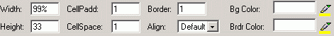

Wenn eine Tabelle markiert ist, können Sie folgende, für die ganze Tabelle geltende, Eigenschaften ändern.
- Breite & Höhe - definiert die Tablellenmaße relativ zur Browsergröße. Man kann den Wert in Pixel oder Prozent angeben. Der vorgegebene Wert ist 75 %.
- Innenabstand der Zelle – definiert den Innenabstand der Zelle zu ihrem Inhalt. Der vordefinierte Wert ist "2".
- Zellenabstand – definiert den Abstand der Zellen in einer Tabelle. Der vorgegeben Wert ist "2".
- Rahmen – definiert die Rahmenstärke der Zellen. Der vorgegeben Wert ist "1". Um keinen Rahmen anzuzeigen, wählen sie einen Wert von "0". Damit wird die Tabelle unsichtbar, um eine unsichtbare Tabelle anzuzeigen, verwenden Sie die Schaltfläche "Unsichtbare Tabelle anzeigen".
- Positionierung – in diesem Dropdownmenu können Sie die Positionierung der Tabelle relativ zum Browser angeben.Wählbar sind: Links, Rechts, und Mittig.
- Bg Farbe - definiert die Hintergrundfarbe der Tabelle. Der Wert kann auch Hexadezimal eingegeben werden.
- Brdr Farbe – definiert die Rahmenfarbe der Tabelle. Der Wert kann auch Hexadezimal eingegeben werden.